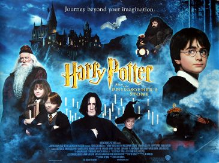

The Philosopher's Stone (Parash Pathar)
Studio: Heyday Films, 1492 Pictures
Starring: Daniel Radcliffe, Rupert Grint, Emma Watson
Director: Chris Columbus
Writer: Steve Kloves, J. K. Rowling
Producer: David Heyman
Harry Potter and the Philosopher's Stone (also known as Harry Potter and the Sorcerer's Stone in the United States, India and the Philippines) is a 2001 fantasy film directed by Chris Columbus and written by Steve Kloves, based on the 1997 novel by J. K. Rowling.
Trivia
- Won the Broadcast Film Critics Association Award for Best Family Film.
- Won the Saturn Award for Best Costume.
- Also nominated for: Broadcast Film Critics Association Award for Best Composer; Broadcast Film Critics Association Award for Best Young Performer; Academy Award for Best Costume Design; Academy Award for Best Original Score; and 15 more.
- Based on Harry Potter and the Philosopher's Stone (1997 novel by J. K. Rowling).
- In 1997, producer David Heyman searched for a children's book that could be adapted into a well-received film.
- Following the publication of Harry Potter and the Chamber of Secrets in 1998, Heyman pitched the novels to Warner Bros.
- Pictures and, in 1999, author J. K. Rowling sold the company the rights to the first four Harry Potter books for a reported £1 million.
Filming Locations
- Alnwick Castle
- Gloucester Cathedral
- Warner Bros. Studios, Leavesden
- Goathland railway station
- Durham Cathedral
- London Zoo
- Glen Nevis
- Leadenhall Market
- Harrow School
- Christ Church
- Principal photography began on 29 September 2000 at Leavesden Film Studios.
- Alnwick Castle and Gloucester Cathedral were eventually selected as the principal locations for Hogwarts, with some scenes also being filmed at Harrow School.
- Other Hogwarts scenes were filmed in Durham Cathedral over a two-week period; these included shots of the corridors and some classroom scenes.
Previous Showings
1 Run • 0 Festivals
All runs on record (1):
- November 8 - 9, 2003w/ The Secret Life of Walter Mitty